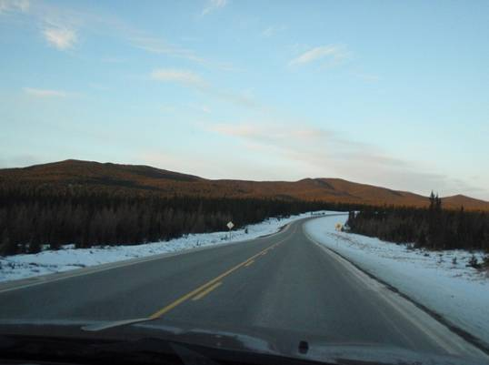
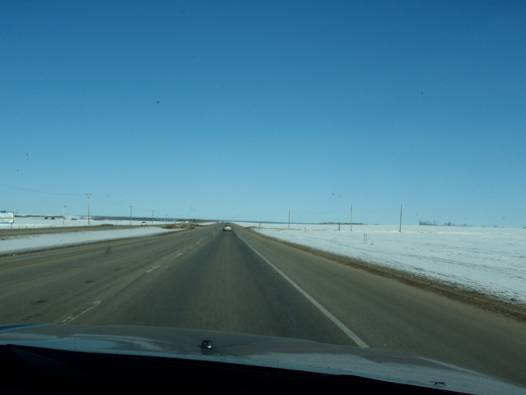
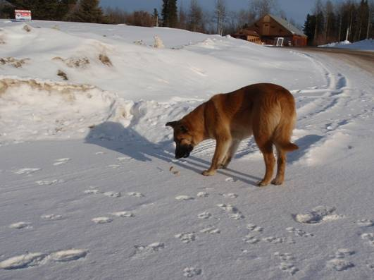
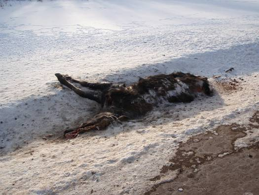
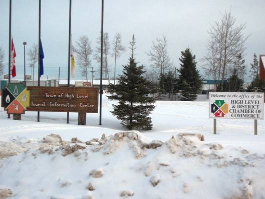

□7日目(2/18)Jasper→High Level

早朝、まだ部屋がひっそりとしている時間に起きだして、キッチンへと集まる。今日も移動距離は長い。シリアルや調理パン、サラダなどをささっと食べて、日が昇る前に宿を出る。外の気温は-13℃。ロッキーの中の町だけあって、やはり寒い。

しばらく走るとゆっくりと太陽が昇ってきた。朝焼けとロッキーの山々が幻想的な雰囲気を出している。道路状況はほぼ直線で、路面に雪は残っていなく走りやすい。おおむね100km/h制限で快走路が続く。エルクやムースなどの野生動物が出現しないかと道路脇をキョロキョロしていたが、残念ながら見ることはできなかった。このまままっすぐ16号線を行けばEdmonton(エドモントン)に直行だが、国立公園を抜けたところで40号線に左折。この辺りの区間は100km以上もガソリンスタンドがない。人が全く住んでいない緩やかな丘陵地をひたすら進む。対向車もたまにしか来ない。ロッキー山脈から離れていくと高い山はほとんどなくなってくる。寒い割には雪の量も少ない。地表を覆いつくす森の中に道路が延びていくのが遠くの方まで良く見える。


Grand Cache(グランドキャッシュ)という町を過ぎ、Grand Prairie(グランドプレーリー)という街まで来ると、地平線が見えるほど、広大な平原が広がってきた。グランドプレーリーはそこそこ大きな街で、今日初めて信号に止められた。街を抜け、郊外に出ると広大な農場が平原を埋め尽くしていた。樹木がないため、雪が積もり、地平線まで辺り一面真っ白になっている。青空の下、白銀の台地の上を、ひたすら直線の道路を北の方へと向かっていく。

凍りついた大河Peace River(ピースリバー)を渡り、Grimshaw(グリムショウ)という小さな町で昼食休憩。入ったレストランはSammy’sレストランという所。バーガー類がメインだが、個性的なメニューがあった。直登が注文したのは、”3 Cheese Calzone”。3種類のチーズが生地に包まれて焼かれており、絶賛だった。KENの注文は”Chicken
Supreme”。鶏唐揚げとフライドポテトの上に、とろけたチーズと濃厚なグレイビーソースがかかっていて、このソースが最高だった。


お腹もいっぱいになった所で大陸移動再開。目的地のHigh Level(ハイレベル)までは約300km。この区間で1000人以上の人が住んでいる町は、たった1つしかない。アルバータ州の北半分の人口密度は非常に小さく、ほとんどが南半分のエドモントンやカルガリーなどの都市に集中している。北へ北へと森の中の一本道を進んでいくと、所々に集落や雪に覆われた畑や牧場が出現する。分岐もほとんどない。途中のTwin Lakeという集落で運転交代のために車を止めたとき、民家から犬が出てきたので、じゃれあうことに。こんなに寒い所でも犬は元気ですごい。

ハイレベルの手前まで来たときに、道路の左側に何かの物体が倒れているのを発見。車を止めて近寄ってみると、鹿のような動物が死んでいた。車にはね飛ばされたのだろうか。この後、2回ほど同じようなものを見た。

人口約4000人のハイレベルの街に到着。メインストリート沿いには飲食店や宿泊施設が立ち並んでいる。今日泊まるのは”Best Canadian Motor Inn”。Motor Inn(モーテル)というのは自動車旅行者のための宿で、カナダの幹線道路沿いにはたくさんある。しかし、今日も調べてあった宿の場所が違っていて、町の人に聞くこととなった。チェックインしてみると、ふかふかのダブルベッドが2つある部屋で、結構広く、快適だった。テレビや冷蔵庫、電子レンジ、コーヒーメーカーまであり、バスルームももちろん付いている。無線RANも無料で利用可能。これで1部屋100ドルちょっとだから安い！4人だとかなりお得。


夕食は近くの中華料理屋へ。久しぶりの中華である。しかし、揚げ春巻きはシナモン味、鶏肉の揚げ団子にかかっているソースはなんとリンゴジャムだった。カナダの中華は面白い。スーパーマーケットにも寄り、半額で売られていたチョコレートケーキを購入。部屋で食べたが、お腹いっぱい！

夜になると小雪が降ってきた。カナダに来て始めての雪。とっても寒いので地面に着いても全く溶けない。しばらくすると辺りは真っ白に。ジープも雪に覆われた。